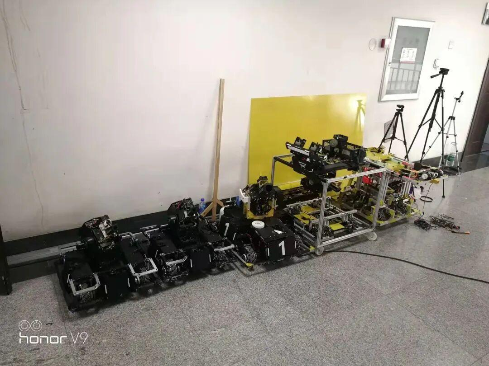

机械组重磅来袭！

机械组，一个控制整个机器人结构的组别，这里高手云集。他们能为社团日常替工技术支持,能够搭建机器人所需的结构,是实至名归的大佬。

心动了吗,小编带你进入大佬的世界。

加入机械组的初心是什么？
樊盈盈：希望学习到更多的东西，交到更多的朋友，大家共同努力共同学习相互促进。
苏展 : 学习技能，不断精进自己。一方面出于兴趣，一方面也是想为未来做打算。
加入电协后遇到的最大的困难是什么？
孔祥喆：对软件上的使用，以及对老学长之间不熟，不好意思去问。
于瑞:困难真的很多，在这些方面，我可以说是纯纯的小白了。很多东西都不认识，很多东西都不会，无论是画图还是实操。我还有很多东西要学习，也很感谢各位帮助我的学长、学姐、同伴们。
加入技术部后有什么收获?
孔祥喆:收获了一堆朋友，以及学长的指导。
苏展：学到了机械知识与绘图知识。
于瑞:收获真的很多，让我不会浑浑噩噩的度过青春，帮我最先一步了解到工科的世界，当然也结交到不少新朋友。
在电协有什么难忘的事?
李鹏飞学长:难忘的事有好多，比如一起熬夜做比赛，半夜出去给自己加个餐，认识了很多有意思的人。
刘航池学长:第一次到文体看到rm的车，第一次动手加工小凳子误差将近1cm，修不完的打印机守恒定律，凌晨四点还在工作的雕铣机，第一次组织比赛，搭建自己设计的理工杯场地，亲眼看着自己设计的车逐渐长大等等，难忘的事还在继续。
对未来有哪些规划?
李鹏飞学长：做好当下的事，去学习更多技术。
刘航池学长：未来的话，希望能够和大家一起进步，一起去享受比赛带来的充实感。也希望技术部的大家能够走的更远。
李鹏飞学长：希望学弟学妹们可以坚守本心，耐得住枯燥，一直走下去你会看到一个不一样的自己。
刘航池学长:技术不是三天打鱼两天晒网就能出来的事情，它需要大家静下心来慢慢的去摸索，学习。这个过程肯定是特别枯燥乏味的，但是一旦坚持过这个时间，你会发现不一样的自己。
一个成功的机械，人们第一眼总是能看到它被组装好的精美外表
如果说程序赋予机械生命
那么负责组装搭建的机械组赋予了它们健康的身体
机械之美是技术更是艺术
是机械组完美的杰作
文字|红鲤
排版|红鲤
审核|一只大苗